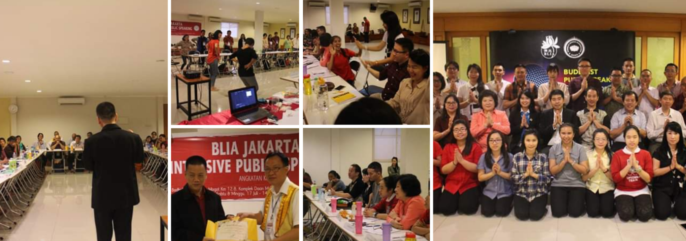

Dharmaduta, secara etimologis berasal dari dua kata yaitu kata Dharma yang berarti ajaran Buddha sedangkan kata Duta adalah petugas atau pengemban. Dharmaduta berarti pengemban dan petugas Dharma. Dharmaduta dalam terminologi Buddhis dikenal sebagai penyebar atau pengkhotbah Dharma. Dharmaduta adalah seseorang yang bersedia berbagi dan membabarkan Dharma dalam lingkungan Buddhis yang biasanya diselenggarakan di Vihara/ Cetiya. Dharmaduta merupakan ujung tombak dalam penyampaian Dharma kepada umat sehingga umat memperoleh pengetahuan Dharma dan dapat mempraktikkannya dalam kehidupan sehari-hari.
Previous BPS Activities

BPS 7(2019)
Ingin menjadi Dharmaduta, namun ada kendala rasa takut atau malu ketika tampil berbicara dan berbagi Dharma di depan umum?
Atau piawai berbicara di depan umum secara memukau nan memikat namun juga memiliki pemahaman teori Dharma & komunikasi yang tepat?
Ikuti pelatihan 11 hari setiap sabtu dan minggu dari tanggal 13 july sampai dengan 18 agustus 2019!
Cocok untuk para DhammaWork, Sukarelawan, Pengajar Sekolah Minggu, Member aktivitas Buddhist, Pengurus vihara, Calon Dhamma Duta, dsb.
Tempat terbatas, hanya utk 30 orang saja, bersertifikat!